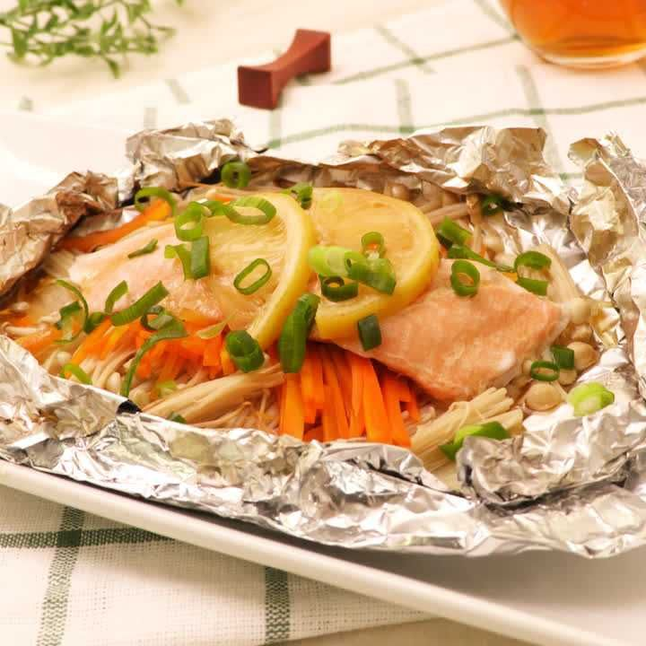

Foil Wrapped Salmon

Description
Ingredients
- 2 slices - Salmon
- 1/2 - Onion
- 1/2 pack - Enoki Mushrooms
- 1/4 - Carrot
- as needed - Chopped Green Onions
- 1/4 - Lemon
- 20g - Salted Butter
- 3 tbsp - Ponzu Soy Sauce
- to taste - Salt
Steps
-
Thinly cut your onions and carrots,
then remove the root end of your mushrooms and cut them in half.
-
In a sheet of aluminum add you onions, mushrooms, carrots,
salmon, salt, butter, lemon, and wrap. (Total of 2)
- Heat your oven to 180C and bake for 15 minutes.
- To finish, open up the aluminum foil and add your ponzu soy sauce
Enjoy!